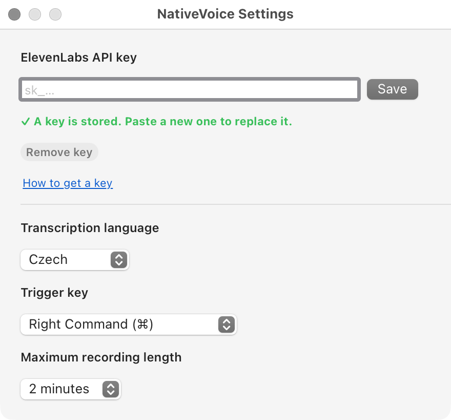

Hold a key, speak, let go. The text lands where your cursor is. It lives in the menu bar, uses your own ElevenLabs key, and the whole thing is a few thousand lines you can read.

NativeVoice costs nothing and never will, but it talks to ElevenLabs, and ElevenLabs charges for transcription. You bring your own key and pay them directly — nothing goes through anyone else and there is no account here to sign up for. Check what it costs today on their pricing page before you commit to it.
About ten minutes, most of it waiting for a confirmation email.
Open the DMG, drag NativeVoice onto Applications, then open it from there.
It has no window and no Dock icon. Look for it in the menu bar, at the top right of the screen.
Create an account at elevenlabs.io, then open
Settings → API Keys and make one.
It starts with sk_.
Copy it straight away — ElevenLabs shows a key once and never again.
Menu bar icon → Settings… → paste → Save. The line underneath turns green when it is stored.
The key goes into the macOS keychain, not into a settings file, and the app never shows it again — not even to you.
System Settings → Privacy & Security → Input Monitoring, switch NativeVoice on, then quit and reopen it. macOS hands the permission only to a fresh process, which is why nothing changes until you do.
This is what lets the app notice you holding the trigger key. It watches modifier keys only — never ordinary typing.
System Settings → Privacy & Security → Accessibility, switch NativeVoice on as well.
This is the one people miss, and it fails quietly: without it your words are transcribed and copied, the paste keystroke is thrown away by the system, and a second later the clipboard goes back to what it was. You hear the finishing sound and nothing arrives.
System Settings → Sound → Input. Speak normally and watch the meter; if it barely moves, raise the input volume.
This matters far more than it sounds like it should — see below.

One gesture, and that is the whole interface.
Put the cursor where you want the text. Hold right ⌘, speak, let go. A small panel shows the level while you talk, then the text appears where the cursor was.
| In the menu | What it does |
|---|---|
| Trigger Key | Right Command, or Shift together with it |
| Language | 36 languages; follows the system until you choose |
| Max Recording Length | Stops a recording you forgot about, so it cannot run up a bill |
| History | Off by default. On, it keeps the last few transcripts to put back on the clipboard |
| Remove filler words | Off by default, because it rewrites what you said |
| Edit vocabulary… | The list of names the transcriber should expect |
| Check for updates… | Manual only. Nothing is downloaded unless you ask |
Switched on, it keeps transcript text in the app's preferences, unencrypted. That is a reasonable thing to want and a bad thing to inherit by accident, so you have to ask for it. Switching it back off deletes what was stored rather than merely stopping.
Audio is deleted as soon as it has been transcribed, whatever this setting says.
Two things move the needle. Both are measured, not guessed.
This is the one nobody expects. A faint signal does not degrade gracefully — it starts changing digits while the rest of the sentence still reads fine, and a wrong number does not look like an error the way a mangled word does.
The same sentence, three times, one Mac:
| Input volume | Peak | “paragraph one hundred and forty-two” |
|---|---|---|
| 29 / 100 | −41 dB | came back as “one hundred and sixty-two” |
| 75 / 100 | −26 dB | correct |
| 75 / 100 | −25 dB | correct |
Ordinary speech peaks around −12 dB. NativeVoice watches this for you: after a transcription that came in too quiet it says so once, and tells you the number, so you can see whether raising the volume helped.
Proper nouns are what transcription gets wrong, and they are a finite list only you know. Menu → Edit vocabulary… opens a plain text file, one term per line. It is read before every transcription, so edits take effect immediately.
~/.config/nativevoice/vocabulary.txt
Same microphone level, before and after adding the terms:
| Spoken | Without the file | With it |
|---|---|---|
| NativeVoice | Native Voice | NativeVoice |
| PostgreSQL | Postgres QL | PostgreSQL |
It will not help with ordinary words. If a common word comes out wrong, that is the microphone or the model, and adding it to the list changes nothing.
Input Monitoring is not granted, or it was granted after the app started. Grant it, then quit and reopen NativeVoice. The menu says which permission it is waiting for.
Accessibility is not granted. Your words are not lost — Copy Last Transcript in the menu still has them.
Almost always the microphone level. Check Sound → Input, and look at the peak the app reports under Open log.
Menu → Open log shows what the app did and why, in plain sentences. If it does not explain itself, that is a bug worth reporting.
No package dependencies. Command line tools are enough to compile; a Developer ID is only needed to sign it.
git clone https://github.com/trustbe/nativevoice.git cd nativevoice ./Scripts/test.sh ./Scripts/build-app.sh 0.1.0 1
The result is a universal binary at .build/app/NativeVoice.app.